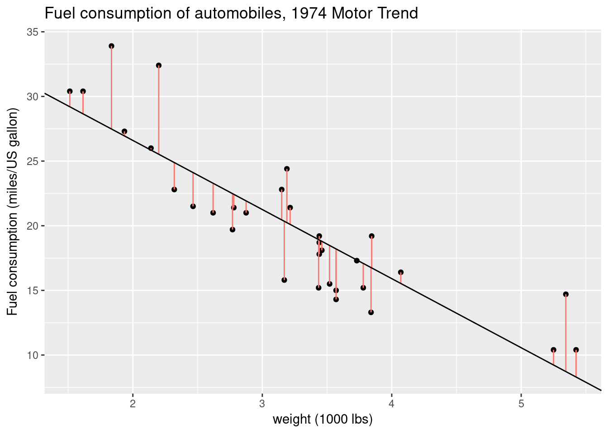

2.1 Calculation of least square estimates
Consider as usual \(\boldsymbol{y}\) and \(n\)-vector of response variables and a full-rank \(n \times p\) design matrix \(\mathbf{X}\). We are interested in finding the ordinary least square coefficient \(\hat{\boldsymbol{\beta}}\), the fitted values \(\hat{\boldsymbol{y}} = \mathbf{X}\hat{\boldsymbol{\beta}}\) and the residuals \(\boldsymbol{e} = \boldsymbol{y} - \mathbf{X}\boldsymbol{\beta}\).
Whereas orthogonal projection matrices are useful for theoretical derivations, they are not used for computations. Building \(\mathbf{H}_{\mathbf{X}}\) involves a matrix inversion and the storage of an \(n \times n\) matrix. In Exercise series 2, we looked at two matrix decompositions: a singular value decomposition (SVD) and a QR decomposition. These are more numerically stable than using the normal equations \((\mathbf{X}^\top\mathbf{X})\boldsymbol{\beta} = \mathbf{X}^\top\boldsymbol{y}\) (the condition number of the matrix \(\mathbf{X}^\top\mathbf{X}\) is the square of that of \(\mathbf{X}\) — more on this later). The code related to the SVD and QR decompositions is provided for reference, so you can validate the derivations in the exercise. You won’t need it in practice.
Optional material: for more details about the complexity and algorithms underlying the different methods, the reader is referred to these notes of Lee.
We can fit a simple linear model with an intercept and a linear effect for the weight, \[ \texttt{mpg}_i = \beta_0 + \texttt{hp}_i\beta_1 +\varepsilon_i.\]
We form the design matrix \((\boldsymbol{1}_n^\top, \texttt{hp}^\top)^\top\) and the vector of regressand \(\texttt{mpg}\), then proceed with calculating the OLS coefficients \(\hat{\boldsymbol{\beta}}\), the fitted values \(\hat{\boldsymbol{y}}\) and the residuals \(\boldsymbol{e}\).
We can compute first the ordinary least square estimates using the formula \(\hat{\boldsymbol{\beta}} = (\mathbf{X}^\top\mathbf{X})^{-1}\mathbf{X}^\top\boldsymbol{y}\). The fitted values are \(\hat{\boldsymbol{y}} = \mathbf{X}\hat{\boldsymbol{\beta}}\) and the residuals \(\boldsymbol{e} = \boldsymbol{y} - \hat{\boldsymbol{y}}\).
data(Auto, package = "ISLR")
y <- Auto$mpg
X <- cbind(1, Auto$horsepower)
n <- nrow(X)
p <- ncol(X)
# Estimation of beta_hat:
XtX <- crossprod(X)
Xty <- crossprod(X, y)
# Solve normal equations
beta_hat <- as.vector(solve(XtX, Xty))
#same as beta_hat <- solve(t(X) %*% X) %*% t(X) %*% y
##Create residuals and fitted values
fitted <- as.vector(X %*% beta_hat)
res <- y - fittedThe residuals \(\boldsymbol{e} = \boldsymbol{y} -\hat{\boldsymbol{y}}\) can be interpreted as the vertical distance between the regression slope and the observation. For each observation \(y_i\), a vertical line at distance \(e_i\) is drawn from the prediction \(\hat{y}_i\).
plot(mpg ~ horsepower, data = Auto,
xlab = "Power of engine (hp)",
ylab = "Fuel economy (miles/US gallon)",
main = "Fuel economy of automobiles",
ylim = c(0, 50),
# the subsequent commands for `plot` tweak the display
# check for yourself the effect of removing them
# bty = "l" gives L shaped graphical windows (not boxed)
# pch = 20 gives full dots rather than empty circles for points
bty = "l", pch = 20)
#Line of best linear fit
abline(a = beta_hat[1], b = beta_hat[2])
#Residuals are vertical distance from line to
for(i in 1:nrow(X)){
segments(x0 = Auto$horsepower[i], y0 = fitted[i], y1 = fitted[i] + res[i], col = 2)
}
The same scatterplot, this time using ggplot2.
library(ggplot2, warn.conflicts = FALSE, quietly = TRUE)
#Create data frame with segments
vlines <- data.frame(x1 = Auto$horsepower, y1 = fitted, y2 = fitted + res)
ggg <- ggplot(Auto, aes(x = horsepower, y = mpg)) +
geom_point() +
labs(x = "Power of engine (hp)",
y = "Fuel economy (miles/US gallon)",
title = "Fuel economy of automobiles") +
geom_segment(aes(x = x1, y = y1, xend = x1, yend = y2, color = "red"),
data = vlines, show.legend = FALSE) +
geom_abline(slope = beta_hat[2], intercept = beta_hat[1])
print(ggg)